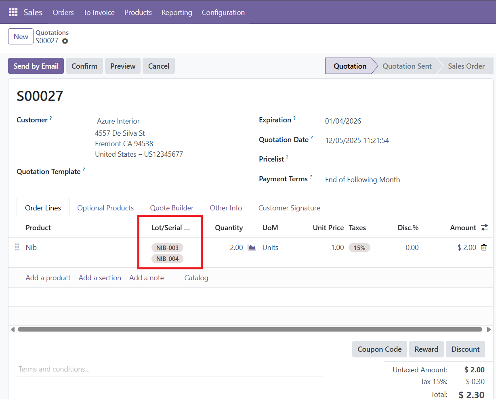
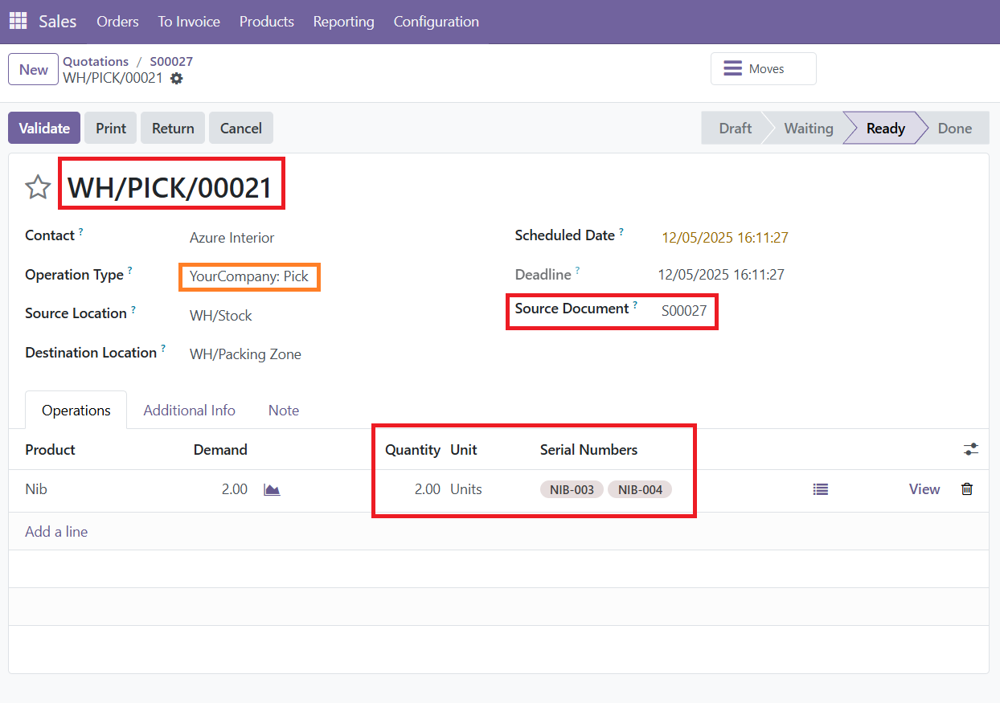
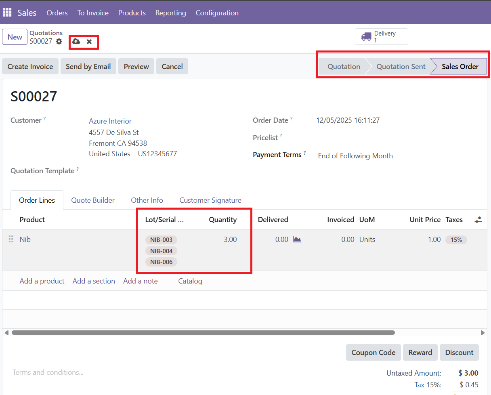
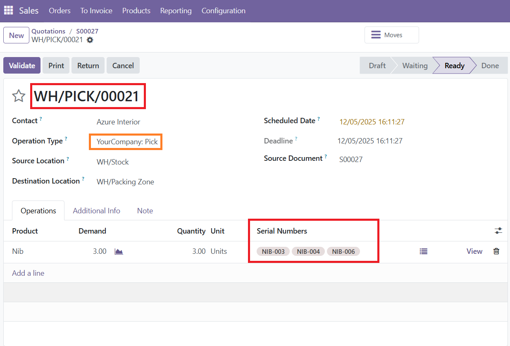
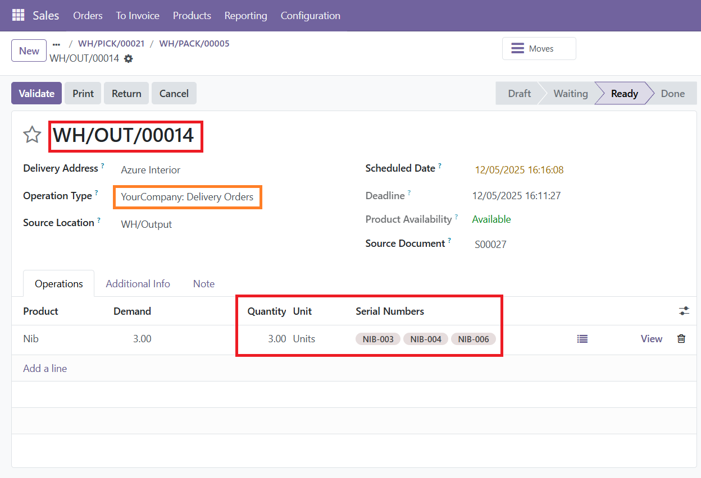
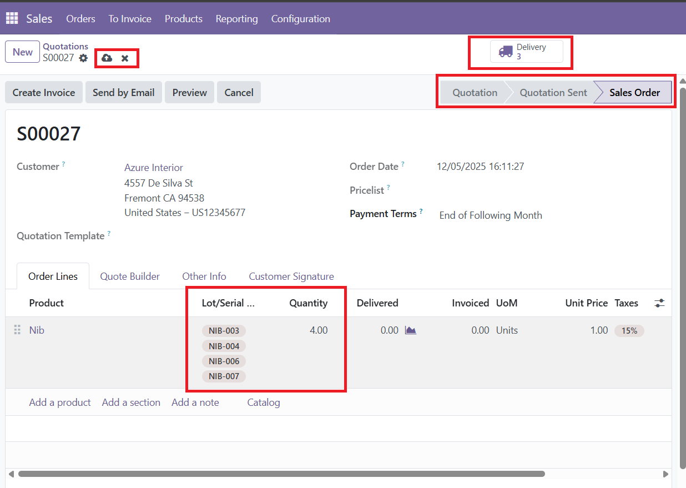
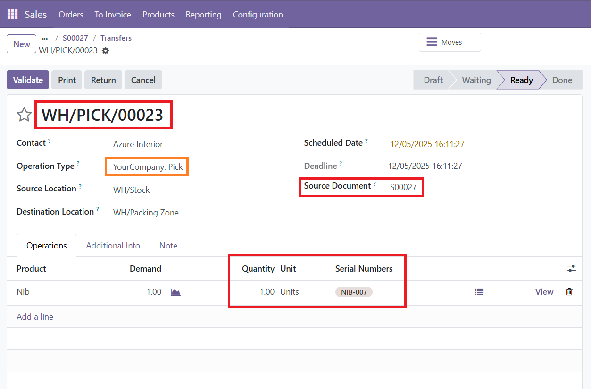

Screen 1
Two serial numbers are selected on the sale order line.

Screen 2
For multi-step routing, the picking automatically receives the same serial numbers selected on the sale order. They appear in the Source Document.

Screen 3
Advanced: If the customer wants one more unit after the sale order is confirmed, a new serial number can be added to the same line. This follows Odoo’s default behavior.

Screen 4
The existing picking updates automatically and now includes all three selected serial numbers.

Screen 5
The same serials move into the next picking steps, following Odoo’s multi-step routing logic.

Screen 6
Advanced: After validating the delivery, if the customer wants another serial, it can be added as a new line or added to the same line. Odoo creates a new picking for the extra quantity.

Screen 7
Shows the serial numbers, delivered quantities, and the remaining quantities still pending for the sale order.